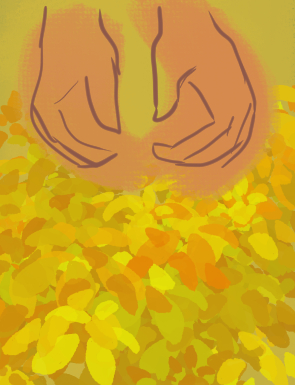
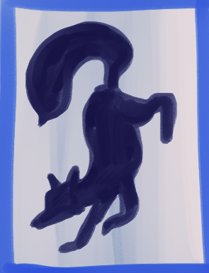
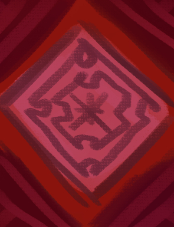
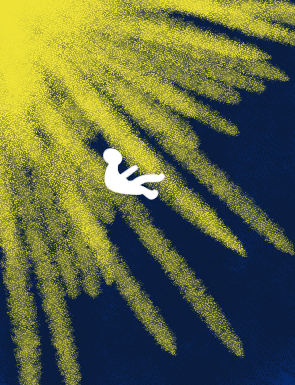

Minneslista
Filter:

Liknelsen om Sådden (2019)
Butler, Octavia
Bok, fysiskt material
Hylla: Hce
Språk: sve
Lauren Oya Olamina är 15 år gammal. I ett USA år 2024 drabbat av finanskriser och klimatkriser är vatten dyrare än bensin, och bränder ödelägger stora delar av landet. Hon inser att det bara kommer att bli värre, och att hon och hennes familj måste jobba hårt på att överleva det som kommer. Men vem lyssnar på en femtonåring?

The Man Who Died Twice (2021)
Osman, Richard
Bok, fysiskt material

Crime and Punsihment (2018)
Dostojevskij, Fjodor
Bok, fysiskt material

Somewhere Beyond the Sea (2024)
Klune, TJ
Bok, fysiskt material